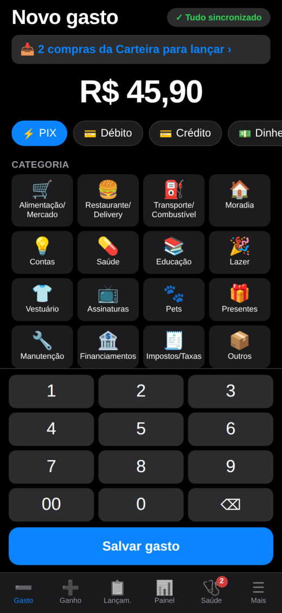
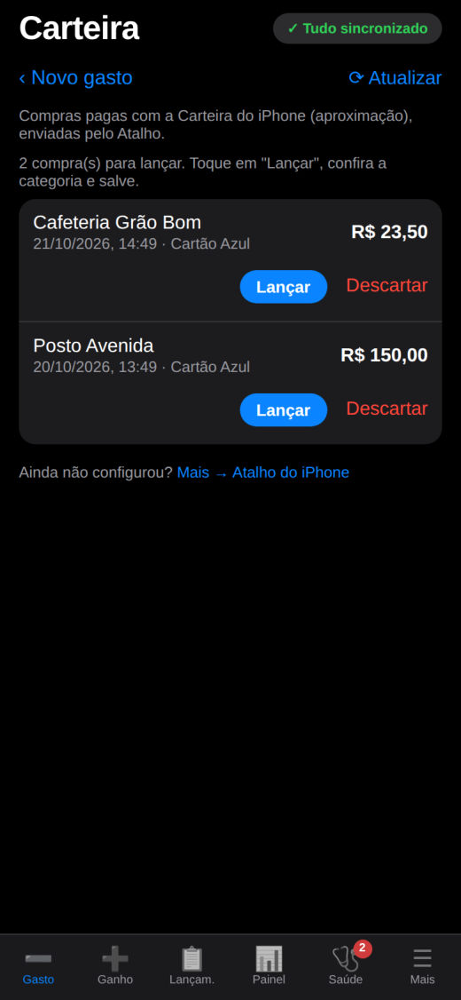
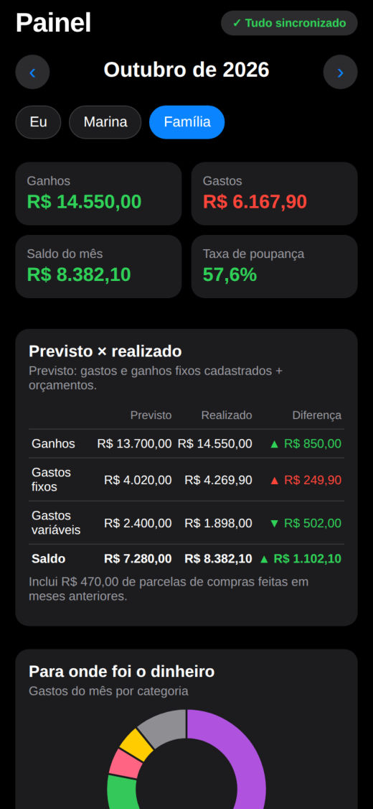
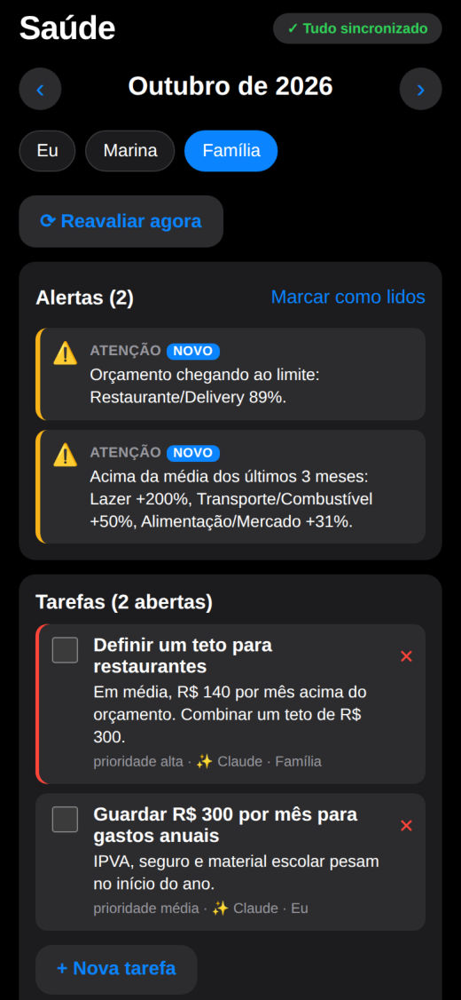
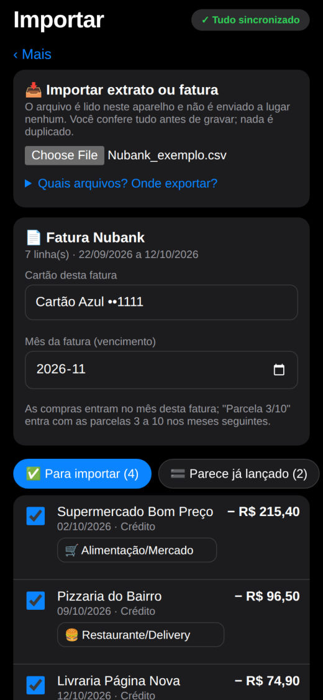
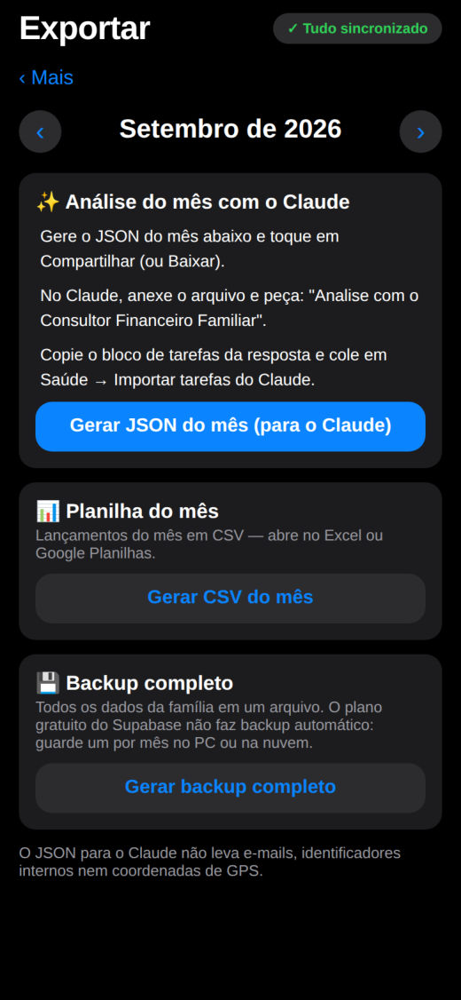

PORTA 09 · APP FINANCEIRO FAMILIAR
O gasto entra na hora. A fatura cai no mês certo.
O app da família lança cada gasto em segundos, funciona sem sinal e entende cartão de crédito: a compra conta no mês em que a fatura vence, parcela por parcela. Lance um gasto no celular e veja o mês reagir. (Família, cartões e valores fictícios; hoje é 21/10/2026.)
Novo gasto
R$ 0,00
CATEGORIA
Painel · Outubro de 2026Família
Ganhos
Gastos
Saldo
Taxa de poupançareferência ≥ 10%
Faturas do cartãoo que já está comprometido nos próximos meses
Orçamento × realizadoaviso em 80%, estouro em 100%
Saúdealertas automáticos do mês
O APP DE VERDADE
Do toque no celular à conversa sobre o mês.
Prints do guia do app, com uma família fictícia ("Lucas" e "Marina"). Telas de login e da chave do Atalho omitidas.

1 Gasto lançado em segundos 
2 Compras da Carteira do iPhone 
3 Painel: previsto × realizado 
4 Saúde: alertas e tarefas 
5 Importa fatura sem duplicar 
6 Análise do mês com o Claude
FICHA TÉCNICA
Finanças da Família
- Problema
- Gasto anotado depois, de memória, se perde. E o cartão de crédito confunde: a compra de hoje só pesa no mês em que a fatura vence, e a parcelada pesa um pouco em cada mês.
- Solução
- Um app instalável no celular: gasto e ganho em poucos toques, até sem sinal. Ele calcula a fatura de cada parcela pelo dia de fechamento do cartão, lança as contas fixas sozinho e importa faturas e extratos do banco sem duplicar.
- Saúde financeira
- Regras que rodam várias vezes por dia: orçamento em 80% e 100%, categoria muito acima da média de 3 meses, poupança abaixo de 10%, parcelas acima de 30% da renda. Viram alertas e tarefas da família.
- IA no mês
- Exporta o mês em JSON (sem e-mails, identificadores nem localização) para análise com o Claude; as tarefas sugeridas voltam para o app.
- Segurança
- Fechado: sem login não se vê nada e não existe cadastro público. Regras de acesso no banco (RLS) por família. A chave do Atalho do iPhone só consegue inserir compras na caixa de quem a criou — não lê nada.
- Stack
- HTML · CSS · JavaScript puros · PWA · IndexedDB (fila offline) · Supabase (Postgres + Auth + RLS) · GitHub Pages · GitHub Actions · testes automatizados